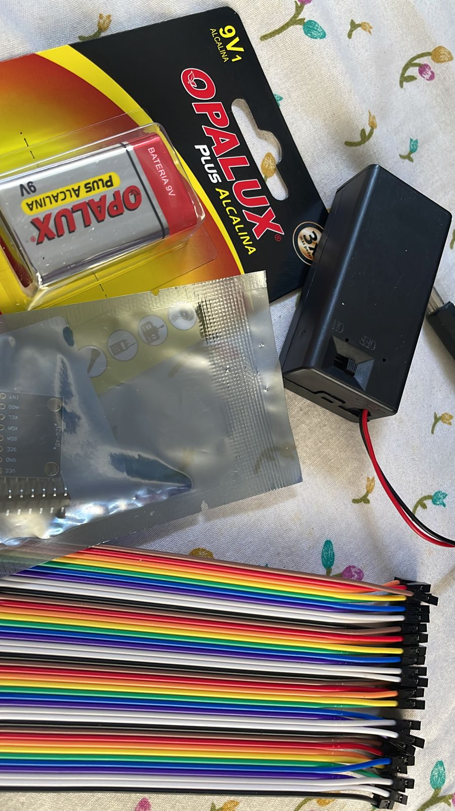
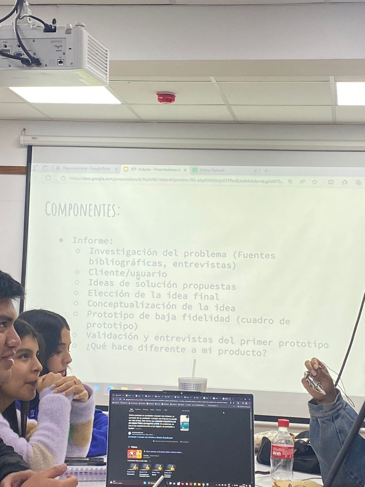

Nicole Chipa
Soy estudiante de Toulouse Lautrec, tengo 19 años y estoy cursando el 7to ciclo de la carrera de arquitectura de interiores, mis hobbies son dibujar, pintar, caminar y escuchar musica.
LABORATORIO DE INNOVACIÓN 2
Para mas information @toulouselautrec
Soy estudiante de Toulouse Lautrec, tengo 19 años y estoy cursando el 7to ciclo de la carrera de arquitectura de interiores, mis hobbies son dibujar, pintar, caminar y escuchar musica.

En la primera sesión del curso, el profesor introdujo el enfoque del curso y discutimos nuestras expectativas. También planificamos el laboratorio 2 y recibimos la tarea de investigar problemas para el proyecto. Más tarde, exploramos la introducción al curso y analizamos las características de un proyecto innovador. El profesor revisó nuestros temas y nos dio retroalimentación.

En esta semana, discutimos la utilidad de una bitácora y el papel crucial de la documentación en la investigación. El profesor nos presentó los programas que utilizaremos para programar y crear nuestra bitácora digital, donde registraremos nuestros avances para el proyecto final. Además, exploramos los conceptos de HTML y CSS, así como las diferencias entre páginas web estáticas y dinámicas.

En la semana 3, aprendimos nuevos lenguajes de programación y técnicas como la inserción de subtítulos, párrafos e imágenes. Exploramos el uso de GitHub y continuamos investigando nuestra problemática, refinando encuestas, perfilando al usuario y definimos los objetivos y materialización del prototipo. También avanzamos en la actualización de nuestra bitácora.

Esta semana aprendimos programación, incluyendo cómo usar subtítulos, párrafos e imágenes. También exploramos GitHub y avanzamos en nuestra problemática. En la clase virtual, discutimos el curso BIM gratuito, revisamos más códigos de programación y evaluamos las encuestas sobre nuestro prototipo.

En la última semana del primer promedio, mejoramos nuestro prototipo con feedback del profesor, añadimos inteligencia artificial y corregimos detalles en Visual Studio. En la clase virtual, aclaramos puntos sobre la entrega final del trabajo grupal y la bitácora. Presentamos nuestro prototipo y acordamos terminar las entrevistas antes del jueves, día de entrega de los trabajos.

Hablamos sobre Pseudocodigo y Diagrama de flujo lo abordamos en nuestro prototipo y tambien cambiamos algunas cosas de acuerdo a los resultados y criticas del profesor, en la clase virtual presentamos un avance del feedback realizado en la clase presencial.

En la semana 7 tocamos el tema de programas de diseño CAD y el trabajo con CAD/CAM, el profesor nos enseño su importancia tambien avanzamos con el diseño de nuestro prototipo, cambiamos algunas cosas por el tema de comonidad y cambiamos el nombre de "Smart Band por EARPHONE SMART.

En esta semana, el profesor nos introdujo al tema de la electricidad y discutimos los conceptos fundamentales de los componentes electrónicos básicos, como resistencias, capacitores y circuitos. Además, compramos nuestros elementos para crear nuestro prototipo .
Hablamos sobre como aprender a instalar y configurar Arduino IDE. Además, vimos tipos de programación y la declaración de librería, entre otros. En esa semana empezamos a configurar nuestro arduino con todo lo que estabamos programando

En la semana 10 definimos a los diseños electrónicos, y aprendimos a realizarlos.Corregimos varias cosas del 3D para la impresión a laser El profesor nos enseño el cronograma para organizarnos ya que para el cierre del promedio tendriamos jurado otra vez .

Presentamos nuestro cuadro de prototipo correspondiente y las consideraciones para el público objetivo y la muestra que se considerará. Corregimos nuestra validacion con el feedback que nos dio el profesor para seguir avanzando.
Hablamos acerca de los programas de Scanner 3D y su funcionamiento, así como de los softwares alternativos, y mucho más. Sobre nuestro proyecto hicimos algunos cambios tanto como en el codigo y el 3D para que en la impresion saliera bien.

Analizamos la complejidad y utilidad de la realidad virtual y la realidad aumentada.Corregimos varias cosas de nuestro 3D y validaciones el profesor nos ayudo a arreglar nuestra impresión y arduino.

En la semana 14 nos dedicamos a ordenar el canva y corregir algunas cosas, imprimimos por ultima vez para empezar a ordenar las conexiones. El profesor nos explico sobre las recientes tendencias tecnológicas.

En estas ultimas semanas nos concentramos en algunos cambios pequeños, empezamos a armar nuestro pitch para el jurado y preparar la exposición . Al final presentamos nuestro proyecto al jurado y nos fue bien.

“El audifono que te mantendrá despierto durante tus viaje”.
.jpg)
Tener sueño (somnolencia) al volante es un factor de riesgo en el tránsito que afecta gravemente nuestra capacidad para conducir de forma segura. Es importante comprender los riesgos que implica la conducción bajo los efectos de la somnolencia, así como conocer los factores que se relacionan con su aparición para poder prevenirla. Earphone smart se centra en evaluar la precisión de la detección de cabeceo del conductor, la eficacia de la alerta en momentos de intensidad. Esta diseñado con un buzzer para despertar al conductor en caso de emergencia.
Estudiante de @toulouselautrec
Para mas información CANVA